Same viewpoints, same scenes, same harness (tools/three_shots.mjs), rendered against
the pre-upgrade tree (tag pre-three-upgrade, served from a second worktree) and against HEAD.
Numbers from tools/shot_compare.mjs: display-space luminance percentiles over the frame with the
HUD rows excluded. L05 is roughly "the shadows", L50 the mids, L95 the highlights; chroma is mean
max-minus-min channel spread — a proxy for how colourful the frame is, not a verdict.
scene.environment, built as a 128×64 float equirect from the
numbers the key light already uses, replaces the flat hemisphere+ambient fill. That is the change
you can see: ambient that varies with the direction a surface faces rather than only its tilt, a
warm side and a cool side to the fill, and specular on cloth, hair and wet ground.NoColorSpace beside a comment explaining that an sRGB decode
produces wrong occlusion rather than an error. Under r128 it survived by accident.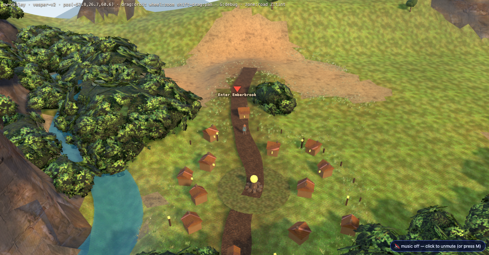
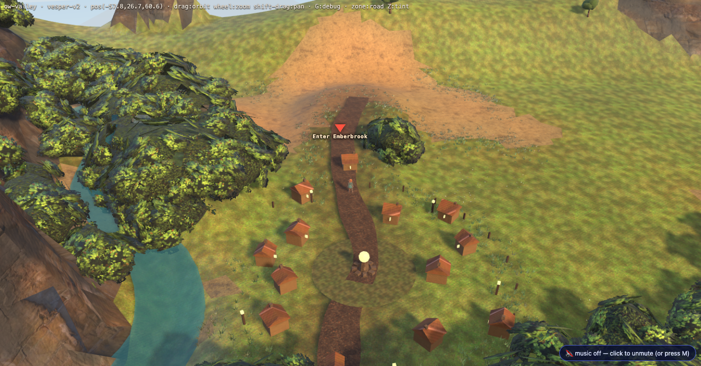
L05 0.188 → 0.237 · L50 0.489 → 0.473 · chroma 0.218 → 0.221. The meadow has variation instead of one olive wash, the road reads warm against it, and the tree shadows have edges. The flat fill that used to sit over everything went out with the hemisphere; what replaced it is the sky, plus a warm sun cap that gives the ambient a direction.
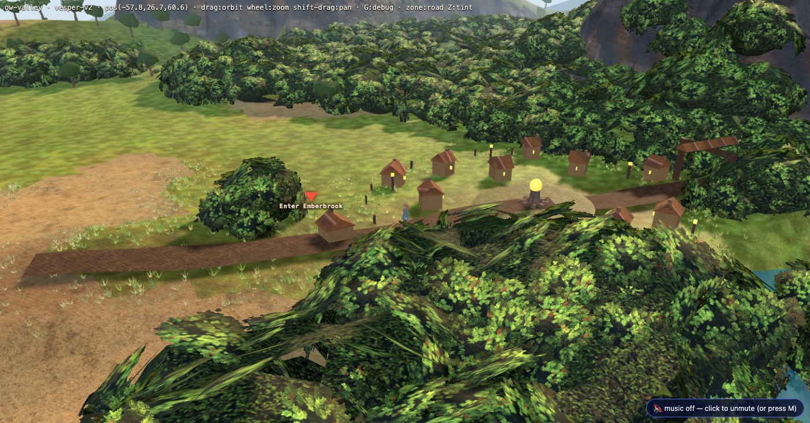
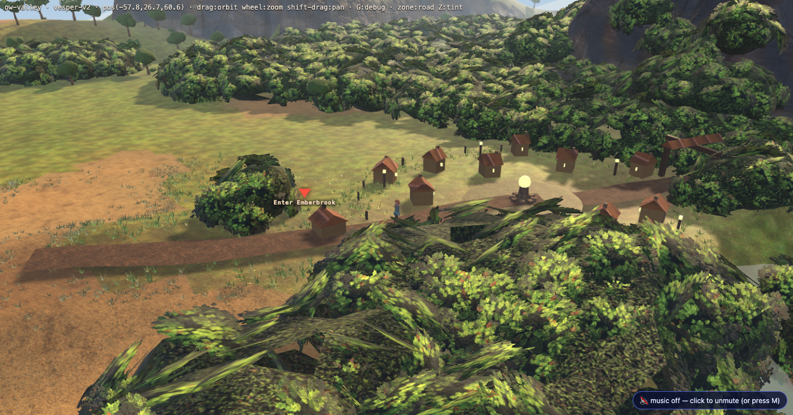
L05 0.122 → 0.157 · L50 0.346 → 0.372 · chroma 0.155 → 0.133. Honest note: this frame lost chroma. It is the most sky-and-haze-dominated of the set and the new grade pulls it warmer overall, which reads as less colour separation even though it reads as more convincing air. Worth the user's eye.
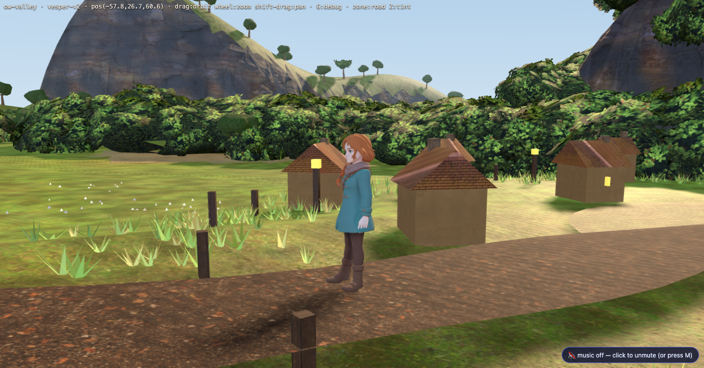
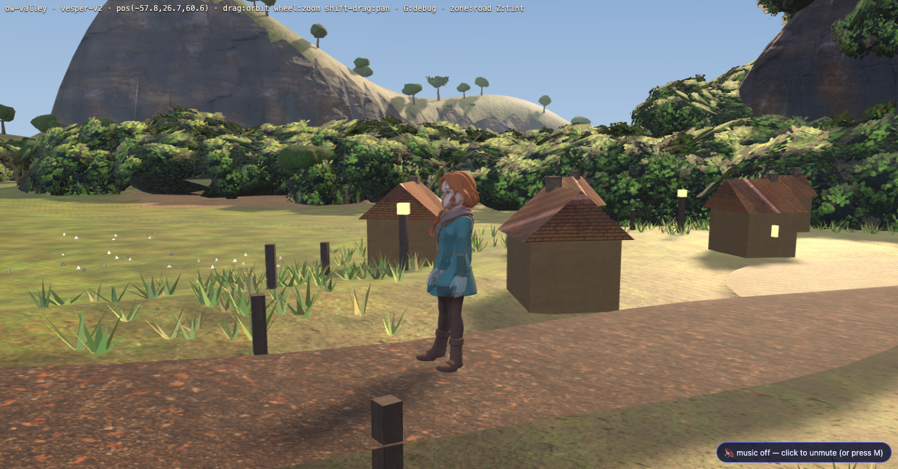
L05 0.157 → 0.168 · L50 0.389 → 0.421 · chroma 0.118 → 0.096. The coat and boots have a lit side and a shadow side that are different colours rather than the same colour at two brightnesses, and the grass under her has depth. Honest note: the frame's overall chroma is down — the whole picture is warmer and more unified, so the cool/warm split that the chroma metric was counting is smaller. This is the frame where the "is it better?" call is a taste call.
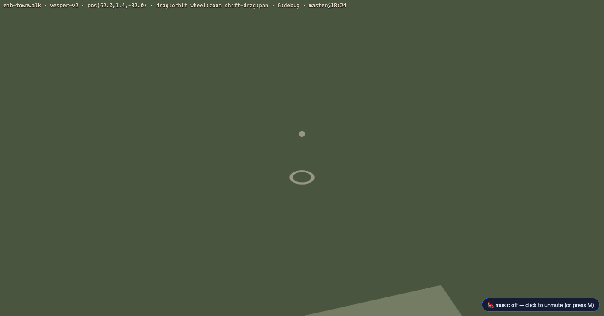
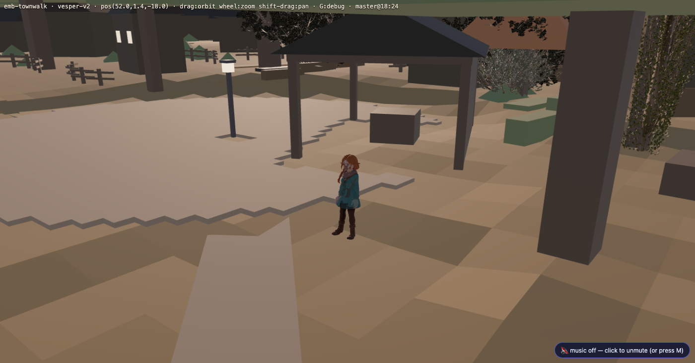
L05 0.078 → 0.171 · L50 0.471 → 0.431 · chroma 0.116 → 0.128. The biggest single win in the set. The paving has a gradient across it, the awning throws a shadow you can read, and the shadowed side of the character is lit by something with a colour instead of being merely dark. Honest note: the ground is more uniformly amber than it was — some of the paving-slab colour variety is now swamped by the key.
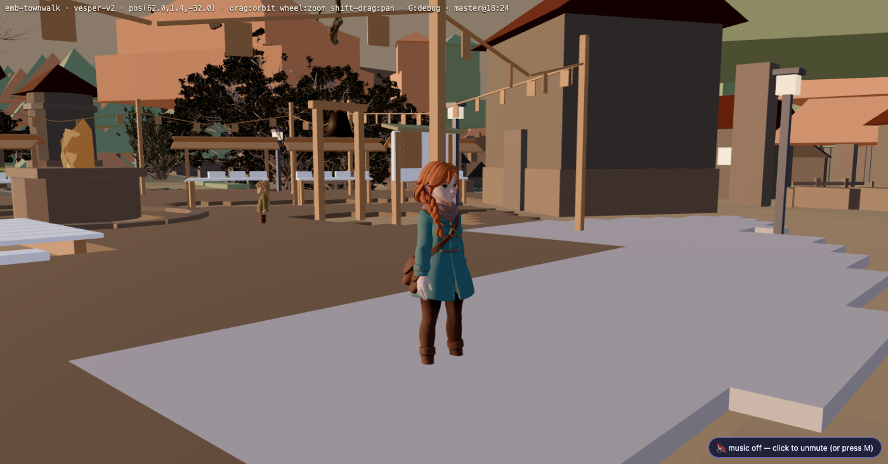
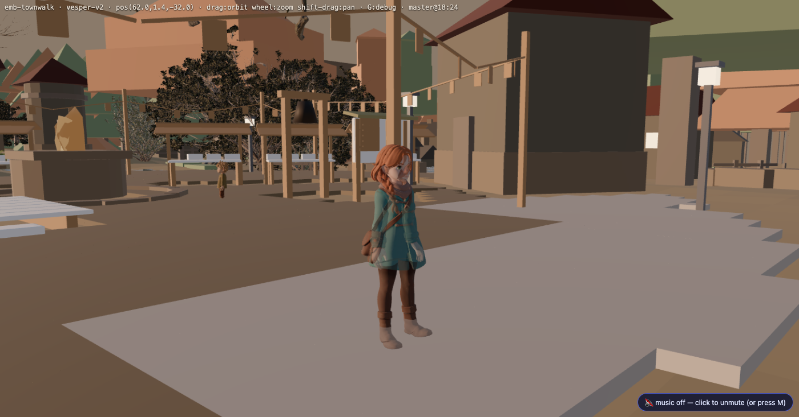
L05 0.140 → 0.178 · L50 0.463 → 0.434 · chroma 0.106 → 0.121. Cloth folds, the bag strap and the boot shafts are all readable now. Skin picks up the sky.
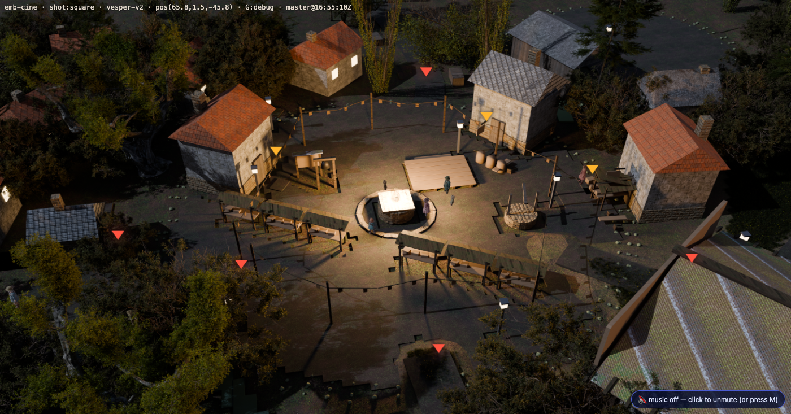
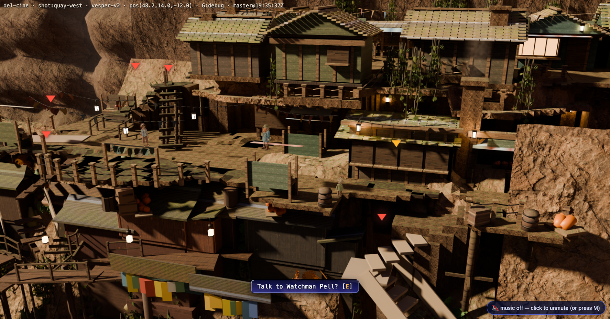
Every cine plate lands within 1–4% of where it was (table below). That is the result we wanted: the backdrop is an already-graded photograph and the upgrade must round-trip it, not re-grade it. It also means the towns' visible gain is confined to the live character and NPCs standing on those plates — which is real but small on a wide shot, and is the one place this upgrade has not yet bought much.
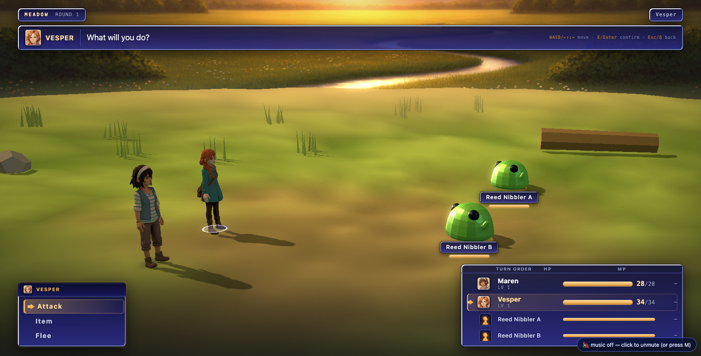
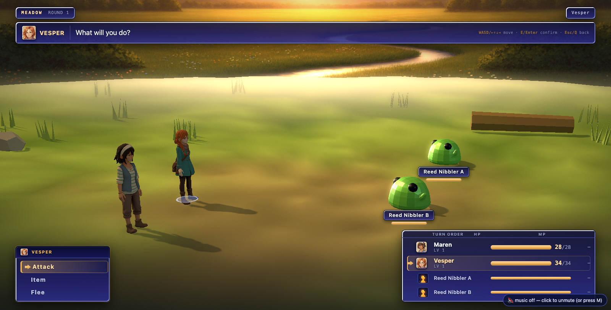
The arena builds its own renderer and its own four-pass grade, whose every constant is a
display-space number. Under r128 the scene pass arrived display-space for free; r185 renders into a
non-XR render target in the linear working space regardless of what the target's texture declares.
The first r185 build put the whole arena about a stop and a half down with its contrast crushed —
with every gate green. Fixed forward: the post targets are declared NoColorSpace and the
composite shader does the linear→display conversion explicitly.
| frame | L05 (shadows) | L50 (mids) | L95 (highlights) | chroma |
|---|---|---|---|---|
| ow-corridor | 0.188 → 0.237 | 0.489 → 0.473 | 0.662 → 0.655 | 0.218 → 0.221 |
| ow-corridor-turn | 0.122 → 0.157 | 0.346 → 0.372 | 0.639 → 0.640 | 0.155 → 0.133 |
| ow-closeup | 0.157 → 0.168 | 0.389 → 0.421 | 0.840 → 0.746 | 0.118 → 0.096 |
| townwalk-wide | 0.078 → 0.171 | 0.471 → 0.431 | 0.633 → 0.586 | 0.116 → 0.128 |
| townwalk-closeup | 0.140 → 0.178 | 0.463 → 0.434 | 0.589 → 0.553 | 0.106 → 0.121 |
| emb-square | 0.015 → 0.014 | 0.152 → 0.153 | 0.496 → 0.498 | 0.089 → 0.090 |
| emb-waystone | 0.008 → 0.008 | 0.115 → 0.116 | 0.294 → 0.296 | 0.069 → 0.070 |
| emb-gateroad | 0.004 → 0.004 | 0.051 → 0.053 | 0.276 → 0.276 | 0.021 → 0.021 |
| del-quay-west | 0.009 → 0.009 | 0.204 → 0.208 | 0.602 → 0.604 | 0.164 → 0.165 |
| del-lockhead | 0.016 → 0.016 | 0.280 → 0.282 | 0.578 → 0.578 | 0.198 → 0.200 |
| gate | baseline | after |
|---|---|---|
| playthrough_test --port=3000 | 86 / 0 | 86 / 0 |
| transition_test | 168 / 0 | 168 / 0 |
| cine_test | 689 / 0 | 689 / 0 (2 soft) |
| slice_test | 848 / 0 | 848 / 0 |
| findability_test | 69 / 0 | 69 / 0 (2 warn) |
| walk_engine_gate --scene ow-valley | GREEN | GREEN — 0 cells lost, BVH fail 0 |
| walk_engine_gate --reduced | mechanism confirmed | mechanism confirmed, fix still holds |
| seam_test --town emberbrook | 177 / 2 (known) | 177 / 2 (known) |
| dialogue_test | 1493 / 2 (known) | 2 known (del.gullgirl) |
| story_test | green | green |
| economy_test | 228 / 0 | 228 / 0 |
| encounter_sim · battle_sim | green | green |
| build-static.mjs | dist ok | dist ok, every .glb verified binary glTF |
The arena regression above passed every one of these. Green gates are necessary, not sufficient — the pictures are the gate.